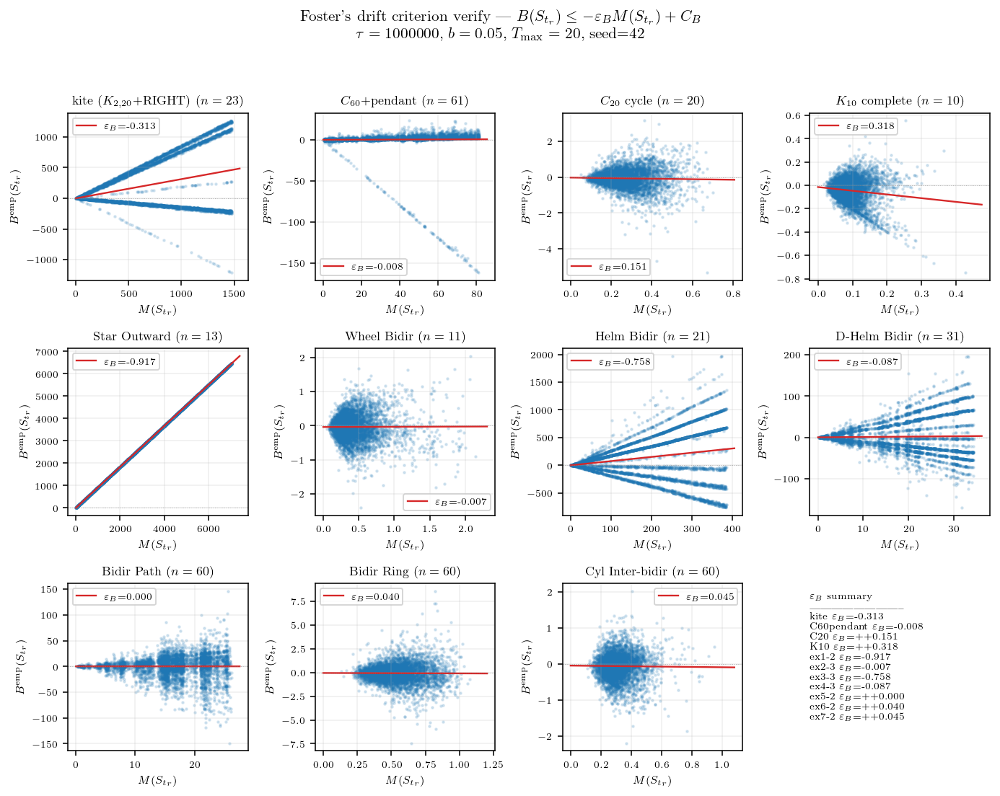

연구 ▷ HST ▷ Foster’s drift criterion 일반 성립 여부 검증 — 11개 그래프
에이의 ABC 통합증명 PDF §3.4 의 Foster’s drift criterion (Assumption 1) 이 그래프와 파라미터에 따라 실제로 잘 성립하는지 실험으로 본다. 본 글은 (B) 실험 결과 공유용으로 판정하고 §2.6/§2.7 적용 면제로 진행한다.

그래프 클래스에 따라 \(M(S_{t_r})\) 시계열이 두 종류로 명확히 나뉜다. fully symmetric (Cycle, Complete, Ring, Cylinder bidir) 은 시계열이 작은 상수 (∼ 1) 부근에서 흔들리는 bounded process — height range 가 시간이 흘러도 일정 scale 위로 안 커진다. 반대로 비대칭 그래프 (kite, Helm Bidir, Star Outward, \(C_{60}\)+pendant 등) 는 시계열이 round 가 진행할수록 거의 선형으로 발산 — height range 가 무한히 커진다.
Foster’s drift criterion (Assumption 1) 은 어떤 graph-level constant \(\varepsilon_B > 0\), \(C_B \ge 0\) 가 존재해서 모든 round 에서
\[B(S_{t_r}) \;\le\; -\varepsilon_B\, M(S_{t_r}) + C_B\]
가 성립하길 요구하는데, 여기서 \(B(S_{t_r}) = \sum_u \pi(u, S_{t_r}) \hbar(u, t_r)\) 는 round 시작 시점의 weighted height deposit (Lemma 3 정의), \(\pi(u, S) = \mathbb{E}[\#_u | S_{t_r}]\) 는 round 길이 동안 노드 \(u\) 의 visit count 의 조건부 기댓값이다. 이 가정의 핵심 함의는 결국 height range \(M(t)\) 가 시간 흐름에서 bounded 라는 것이다 — \(\varepsilon_B > 0\) 가 작동하면 큰 \(M\) 에서 음의 drift 가 작용해 \(M\) 이 다시 작아져 stationary 분포 위에 머문다 (positive Harris recurrence). 가정이 깨지면 \(M\) 이 발산. 그러니 \(M\) 시계열의 long-run behavior 가 가정의 진짜 의미를 직접 보여준다 — 위 figure 가 그 자체로 Assumption 1 의 graph-별 검증이다.
추가로 가정의 정량 형태도 raw scatter 로 확인할 수 있다. 각 round 의 \((M_r, B^{\rm emp}_r)\) 한 sample 을 모아 \(B^{\rm emp}_r = \sum_u \#_u(r) \hbar(u, t_r)\) — Lemma 2 의 좌변 양식 — 으로 \(B(S)\) 의 instantaneous 추정으로 사용. 다수 round 의 sample 평균이 \(B(S)\) 의 추정. 이 scatter 에 OLS \(B = -\varepsilon_B M + C_B\) 회귀를 fit 한 결과:

| 그래프 | OLS \(\varepsilon_B\) | 판정 |
|---|---|---|
| \(C_{20}\) cycle | \(+0.151\) | ✓ |
| \(K_{10}\) complete | \(+0.318\) | ✓ |
| Bidir Ring | \(+0.040\) | ✓ |
| Cyl Inter-bidir | \(+0.045\) | ✓ |
| Bidir Path | \(+0.0005\) | ~ |
| Wheel Bidir | \(-0.007\) | ~ |
| \(C_{60}\)+pendant | \(-0.008\) | ~ |
| D-Helm Bidir | \(-0.087\) | ✗ |
| kite | \(-0.313\) | ✗ |
| Helm Bidir | \(-0.758\) | ✗ |
| Star Outward | \(-0.917\) | ✗ |
OLS \(\varepsilon_B\) 부호 (만족 ✓ / borderline ~ / 위반 ✗) 와 \(M\) tail mean 의 자릿수가 거의 monotone 대응한다 — \(M\) 시계열 진단과 OLS 회귀가 같은 결론을 가리킨다.
OLS 단순 회귀에는 한 가지 한계가 있다. Helm Bidir 같은 그래프의 scatter 를 자세히 보면 점들이 cloud 가 아니라 여러 직선이 부채꼴로 펼쳐진 구조다 — round 안 walker 의 path 가 그래프 구조에 의해 finite 개의 type 으로 분류되고, 각 type 별로 visit count vector \((\#_u)_u\) 가 fixed pattern 이라 type 안에서는 \(B^{\rm emp}_r\) 이 \(M_r\) 에 거의 선형이기 때문. 단일 직선으로 강제한 OLS slope 는 type 별 평균 trend 의 weighted 평균에 가까운데, 가정의 본질 (\(M\) 의 boundedness) 은 위쪽 figure 가 더 직접적으로 보여준다.
결론적으로 Assumption 1 은 ABC 의 핵심 hypothesis 임에도 모든 그래프에서 자동 성립하는 보편 명제가 아니다. Theorem A (balanced) 의 적용 범위는 사실상 fully symmetric 또는 거의 대칭인 그래프 클래스로 제한될 가능성이 있고, 비대칭 그래프 (Star Outward, Helm 류, kite) 에서는 Foster-Lyapunov 가 직접 적용되지 않을 수 있다.
시뮬 코드와 figure 생성 코드는 본문에 포함하지 않았고 ((B) 양식, §2.6 면제), 본인 책상에 보관: 260522_소미_foster_verify.py (s181 sequential 약 60초), 260522_소미_foster_figs.py (B-M scatter), 260522_소미_foster_M_series.py (\(M\) 시계열). raw 캐시: results/numeric/260522_소미_foster_verify.py/Guebins-Mac-mini.local_foster_verify.npz.